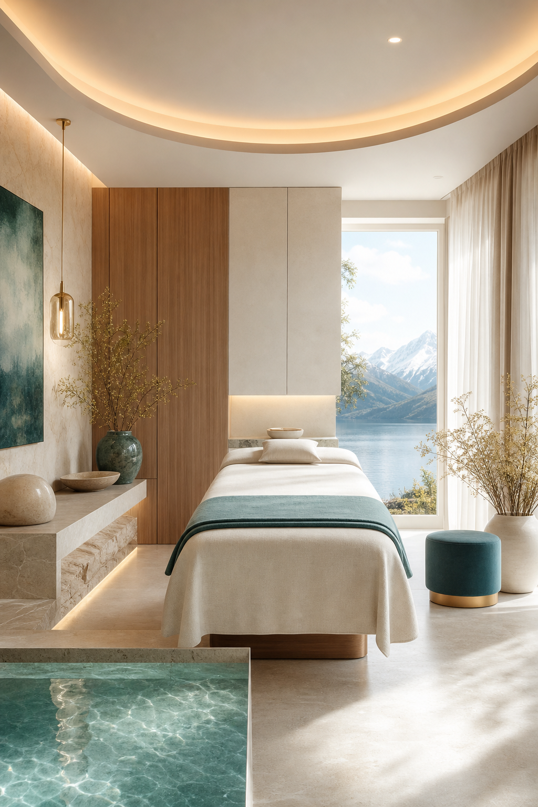
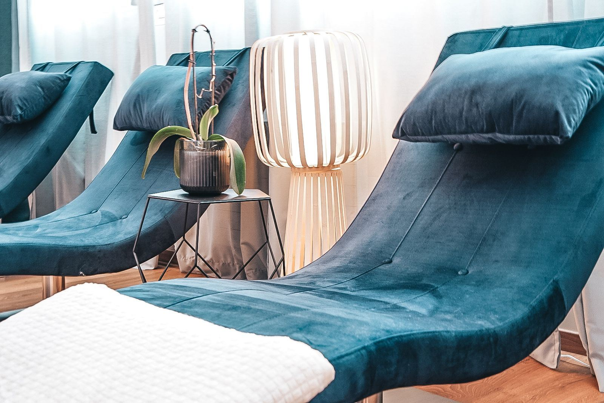
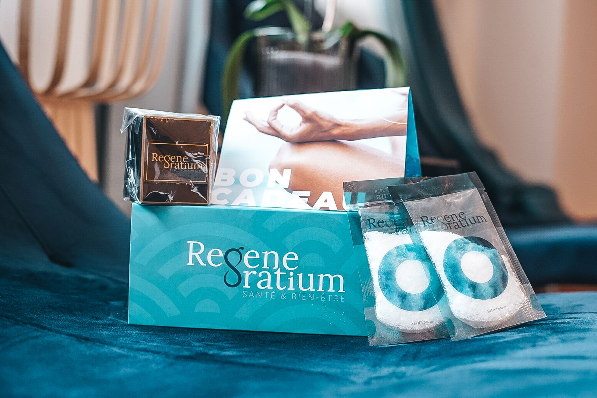
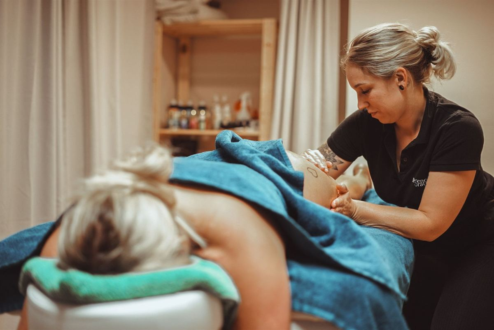
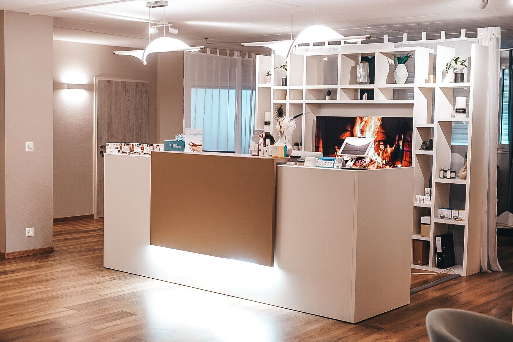
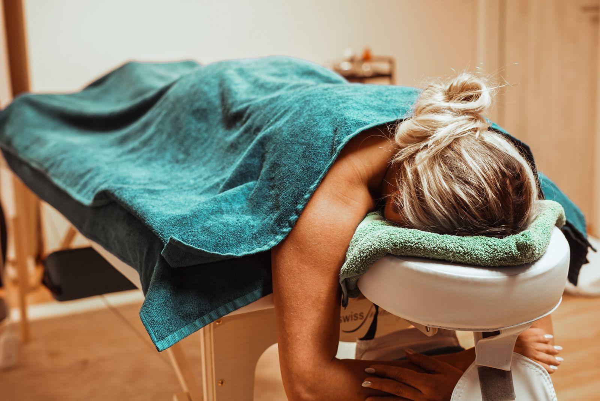
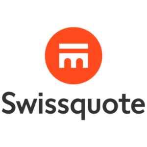
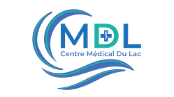
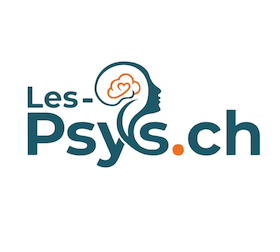
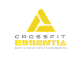

Flottaison
Immergé dans une eau saturée en sel d'Epsom, le corps flotte sans effort. Le système nerveux se relâche, l'esprit s'apaise — une parenthèse de calme profond.
Prendre rendez-vousUn lieu dédié à l'équilibre, à la récupération et à l'auto-régénération naturelle du corps et de l'esprit — niché à Rolle, entre Genève et Lausanne.

Des expériences pensées pour relâcher le corps, apaiser le mental et soutenir la récupération — dans un cadre calme et enveloppant.
Immergé dans une eau saturée en sel d'Epsom, le corps flotte sans effort. Le système nerveux se relâche, l'esprit s'apaise — une parenthèse de calme profond.
Prendre rendez-vousUne exposition brève à un froid extrême pour apaiser les inflammations, soulager les douleurs et accélérer la récupération du corps.
Prendre rendez-vousUne chambre tapissée de sel naturel pour soutenir les voies respiratoires et la peau, dans une atmosphère feutrée et régénérante.
Prendre rendez-vousDes massages sur mesure pour dénouer les tensions, relancer la circulation et offrir au corps un vrai temps de relâchement.
Prendre rendez-vousDes prises en charge assurées par des professionnels de santé, pensées pour votre équilibre physique et psychique — avec, selon les soins, une prise en charge par les assurances.
Un accompagnement nutritionnel personnalisé pour faire évoluer durablement vos habitudes alimentaires et soutenir votre santé.
Remboursé · assurance de base (LaMal) Prendre rendez-vousUn espace d'écoute et d'évaluation pour mieux comprendre vos émotions et vos comportements, et retrouver un équilibre intérieur.
ASCA & RME · selon complémentaire Prendre rendez-vousUn accompagnement structuré pour traverser les périodes difficiles et améliorer durablement votre bien-être mental.
Selon Tarmed · complémentaire Prendre rendez-vousDes thérapies douces et manuelles, complémentaires aux soins médicaux, pour accompagner le corps dans son équilibre et sa capacité naturelle à se régénérer.
Une approche manuelle pour libérer les tensions, améliorer la mobilité et soutenir l'équilibre global du corps.
Selon assurance complémentaire Prendre rendez-vousDes touchers très doux pour relâcher les tensions profondes et soutenir le système nerveux — apaisant et régénérant.
ASCA & RME · selon complémentaire Prendre rendez-vousUne approche holistique mêlant méthodes naturelles, nutrition et micronutriments pour optimiser votre vitalité.
Selon assurance complémentaire Prendre rendez-vousUne technique traditionnelle par succion pour relancer la circulation, libérer les tensions et favoriser la récupération.
Selon assurance complémentaire Prendre rendez-vousIssue de la médecine traditionnelle chinoise, elle soutient l'équilibre énergétique, le sommeil et la gestion de la douleur.
Selon assurance complémentaire Prendre rendez-vousUn état de conscience modifié pour mobiliser vos ressources intérieures et accompagner le changement en douceur.
ASCA · selon complémentaire Prendre rendez-vousRespiration, relaxation et visualisation positive pour apaiser le mental, mieux dormir et renforcer la confiance en soi.
ASCA · selon complémentaire Prendre rendez-vousUn accompagnement sur mesure pour comprendre votre niveau de stress et bâtir un plan de soin adapté — en combinant, selon vos besoins, soutien psychologique, flottaison, thérapie cranio-sacrée ou acupuncture.
Découvrir le programmeÀ Rolle, entre Genève et Lausanne, Regeneratium réunit soins médicaux, thérapies douces et expériences bien-être dans un cadre calme, lumineux et apaisant.


Un accueil chaleureux pour vous orienter vers le soin qui vous correspond.

Le caisson d'apesanteur, pour une relaxation profonde du corps et de l'esprit.

Un sas de calme entre deux soins, pour souffler et prolonger le bien-être.

Des cabines lumineuses et apaisantes dédiées aux thérapies et aux massages.
La sérénité de nos espaces et l'attention de notre équipe au fil des avis laissés par celles et ceux qui sont venus se régénérer.
Un vrai havre de paix. La séance de flottaison m'a procuré une détente que je n'avais jamais ressentie. L'équipe est aux petits soins.
Sophie M. Avis GoogleAccueil chaleureux, cadre magnifique et soins de grande qualité. La cryothérapie a vraiment aidé ma récupération sportive.
Julien R. Avis GoogleUn centre complet où l'on prend le temps de vous écouter. Mon suivi en diététique a changé mon rapport à l'alimentation.
Camille D. Avis GoogleLa chambre de sel est une expérience unique, très apaisante pour la respiration. Je recommande sans hésiter.
Nadia B. Avis GoogleProfessionnalisme et douceur. L'ostéopathe a su soulager mes tensions en quelques séances. Merci à toute l'équipe.
Marc L. Avis GoogleUn lieu où le corps et l'esprit se régénèrent vraiment. On ressort léger et serein à chaque visite.
Élodie F. Avis GoogleOffrez une parenthèse de bien-être — flottaison, massage, cryothérapie… — à composer librement dans notre boutique de bons cadeaux.
Tout ce qu'il faut savoir avant votre visite — remboursements, organisation et types de soins. Une question reste sans réponse ? Écrivez-nous.
Poser une questionAssurances
Plusieurs de nos soins sont pris en charge selon votre couverture : la diététique est remboursée par l'assurance de base (LaMal), et de nombreuses thérapies (psychologie, cranio-sacrée, acupuncture…) le sont via les assurances complémentaires (ASCA & RME).
Oui, plusieurs de nos thérapeutes sont reconnus ASCA et/ou RME, ce qui permet un remboursement par la plupart des assurances complémentaires. Le détail vous est précisé lors de la prise de rendez-vous.
Vous réglez la séance, puis transmettez la facture à votre assurance complémentaire. Nous vous remettons un justificatif conforme aux exigences ASCA / RME.
Questions générales
Au cœur de Rolle, Rte de la Vallée 7, idéalement placé entre Genève et Lausanne, avec un accès facile et du stationnement à proximité.
Par téléphone au +41 21 826 00 88, par e-mail, ou via le formulaire de contact. Notre équipe vous oriente vers le soin le plus adapté à votre besoin.
La plupart de nos soins bien-être et thérapies sont accessibles sans ordonnance. Certaines prises en charge médicales peuvent en nécessiter une — nous vous renseignons au cas par cas.
Types de soins
Les soins médicaux sont assurés par des professionnels de santé (diététique, psychologie…), les thérapies regroupent des approches manuelles et naturelles (ostéopathie, acupuncture…), et le bien-être réunit les expériences de récupération et de détente (flottaison, cryothérapie…).
Nous proposons un accompagnement dédié à la prise en charge du stress, combinant selon les besoins flottaison, soutien psychologique, cranio-sacrée ou acupuncture. Une première évaluation permet de construire votre parcours.
La majorité de nos soins conviennent à un large public. Certaines pratiques ont des contre-indications (grossesse, pathologies spécifiques) ; notre équipe les évoque toujours avant la séance.




Une question, une réservation ? Notre équipe vous répond avec plaisir et vous oriente vers le soin le plus adapté.